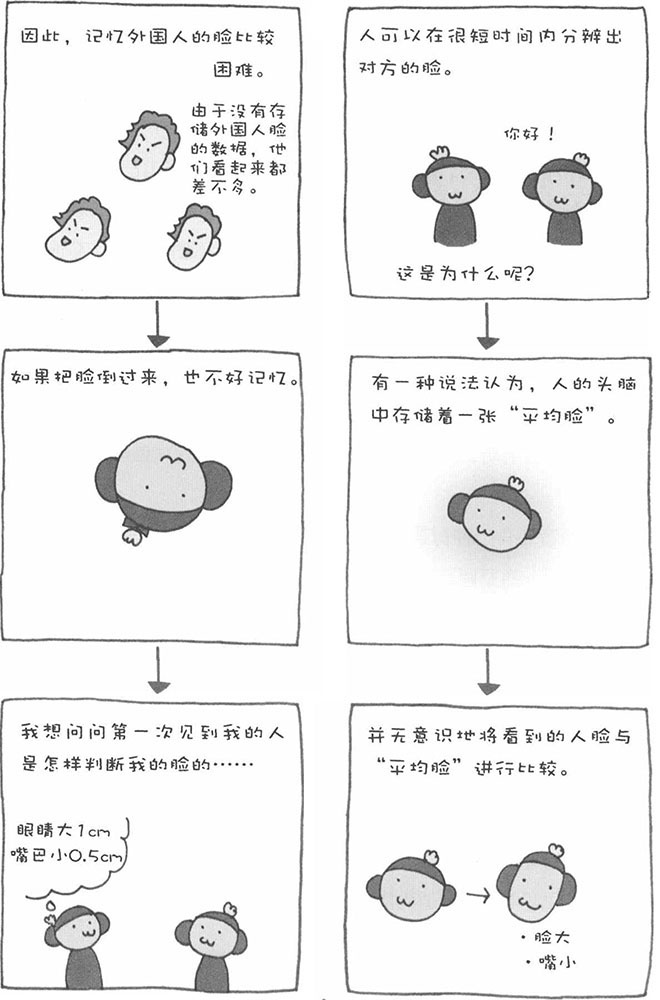

前面为大家介绍了我们的视觉等感觉机能不可靠的一面，也许看过之后您会对自己有点失望。其实，大可不必如此。我们的感觉机能也有非常优秀的一面。其中之一，就是识别人脸的功能。
当我们看到一张脸时，可以在一瞬间就判断出对方是自己认识的人还是陌生人。这是将对方的眼睛、鼻子、嘴、脸的轮廓等众多信息在瞬间进行处理和识别的非常复杂的能力。关于其中的原理，科学家们目前尚无定论。
有一种说法认为，人会根据平时的经验建立一个"平均脸"数据库，并无意识地将某人的脸部特征储存起来，比如A君的眼睛比"平均脸"的眼睛小、嘴巴比"平均脸"的嘴巴大等等。具有个性的脸与"平均脸"的差异较大，相对比较好记，而对于接近"平均脸"的脸，我们也会寻找其中的个别特征进行记忆。以日本人为例，他们平时接触的欧美人比较少，头脑中没有关于欧美人脸的数据库，因而对于欧美人的脸不容易记忆。
不过，2008年1月，日本科学技术振兴机构（JST）发表的研究报告称，刚出生的小猴就具有辨识脸的能力。试验人员将刚出生的小猴进行隔离词养，不让它们见到任何"脸"然后给他们看人脸和猴脸的照片，以及其他物体的照片。结果，小猴虽然第一次见到脸的照片，却能很好地识别出来，对其他物体则没有那么敏感。这真是一种优秀的能力。
我们人类的婴儿也能马上记住人的脸。这不仅仅因为人类婴儿的记忆力比其他动物好，也许和猴子一样，人类的婴儿也有天生辨识人脸的能力。这种能力真是有趣又复杂，希望今后的科学家能更详细地揭开其中的奥秘。
